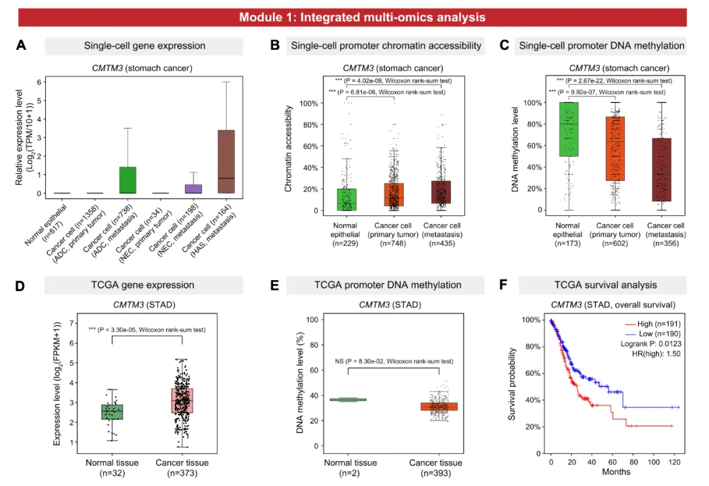
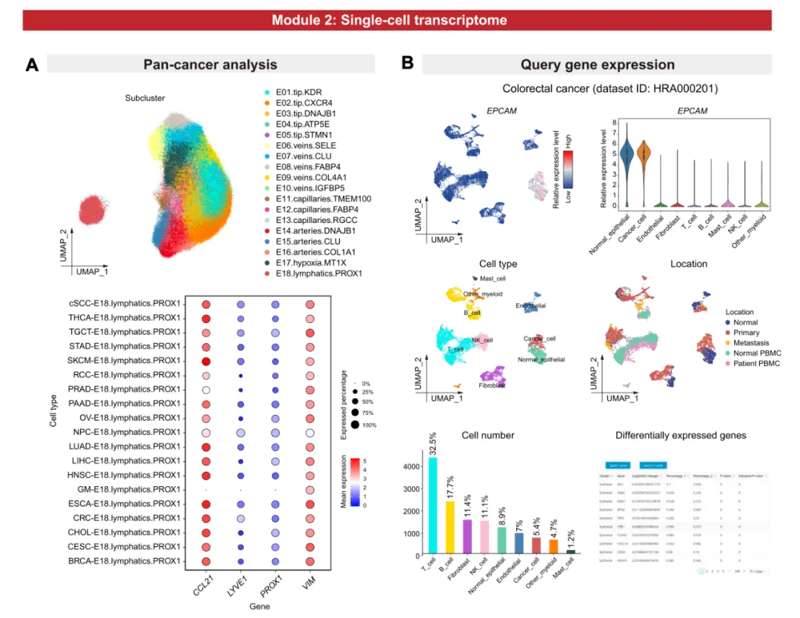
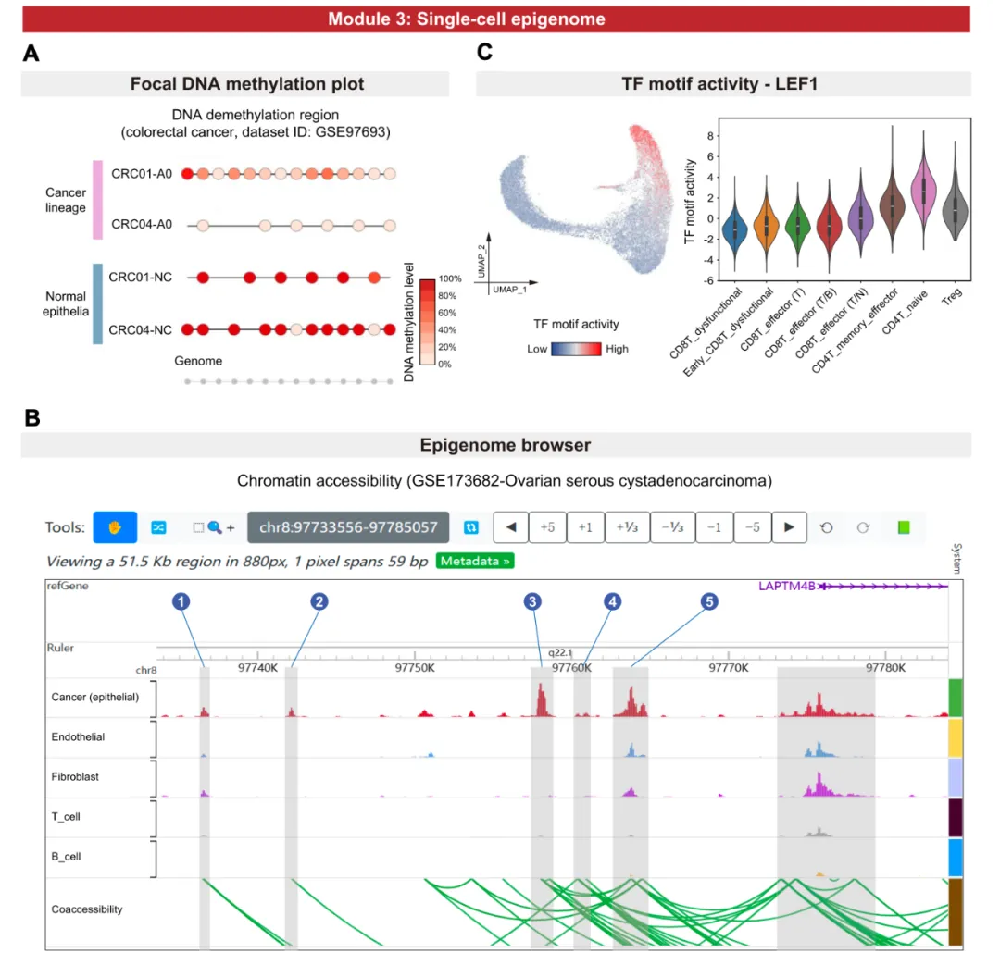
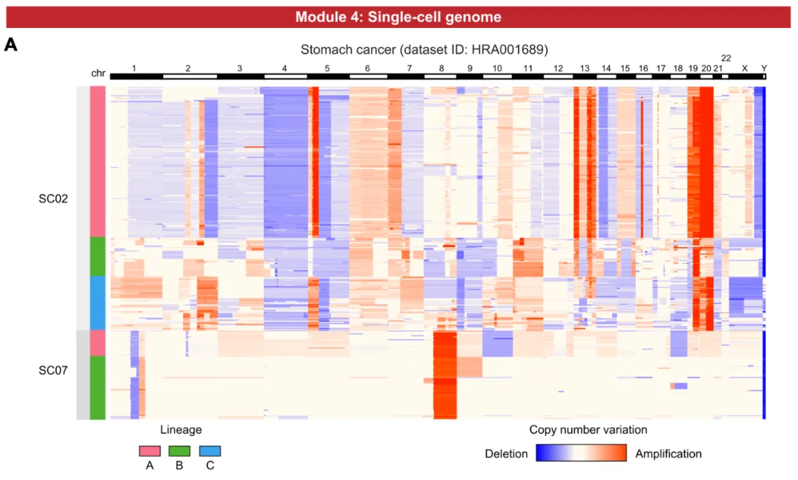
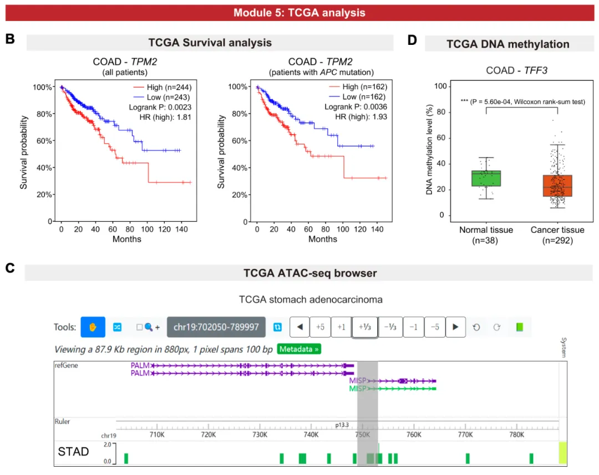

《NAR》 | 泛癌单细胞多组学在线分析工具—scCancerExplorer
原文：https://mp.weixin.qq.com/s?__biz=MzAwMzIzOTk5OQ==&mid=2247526730&idx=1&sn=b1317d8ae25ea5fe8868de2b2e9baad9&chksm=9b3c101aac4b990c89168d874a14e2551047d13426567dd103045818357fc7d5c52fbd30d951#rd 合集：文献速递
一、写在前面
`` 近日，Nucleic Acids Research期刊在线发表了泛癌单细胞多组学在线数据库scCancerExplorer 。该数据库覆盖了50余种人类癌症类型（涵盖生殖系统、血液系统、消化系统、呼吸系统、神经系统、泌尿系统、内分泌系统、运动系统等），整合分析超过600万个单细胞的多组学数据（包括转录组、DNA甲基化组、染色质可及性等），并且为研究者提供了十分丰富的在线分析和可视化功能，包括五大功能模块（共计12个实用功能），旨在助力肿瘤研究者及临床科研人员探究癌症的分子机制。用户只需点击鼠标即可对复杂的单细胞多组学数据进行探究，并且可以一键保存定制化、发表级别的图片用于自己的研究。数据库访问链接:https://bianlab.cn/scCancerExplorer/
二、主要内容
模块一：整合多组学分析****
通过简单的点击鼠标，即可便捷地获取基因在 多种组学层面的综合信息，包括在癌细胞及肿瘤微环境的各种细胞类型中的基因表达水平、TCGA生存分析结果、启动子区DNA甲基化水平、启动子区染色质可及性水平和转录因子活性等，帮助用户快速从多个角度理解关注的基因及其在肿瘤发生发展中的作用。

图2. 整合多组学分析模块
模块二：单细胞转录组分析
-
泛癌转录组分析（Pan-cancer analysis）：通过访问整合的泛癌数据集，探究不同癌种中细胞类型的表达特征的异同点。
-
检索基因表达（Query gene expression）：查询感兴趣基因在选定癌种和细胞类型中的表达模式，并可同时浏览细胞类型鉴定结果、取样部位、临床分期、性别信息及差异表达基因表格等。
3. 个性化图表绘制（DIY expression plot）：支持用户自定义绘制多种形式的图片（点图、热图、小提琴图），展示感兴趣的多个基因在选定细胞类型中的表达模式，例如可视化比较不同采样位置、癌症分期、病理亚型和性别之间的差异，并且生成的图片均可以下载为PDF文件。

图3. 单细胞转录组分析模块
模块三：单细胞表观组分析****
-
局部DNA甲基化绘图（Focal DNA methylation plot）：以“糖葫芦图”的形式，直观展示选定区域每个CpG位点的DNA甲基化状态。
-
启动子区DNA甲基化绘图（Promoter DNA methylation plot）：在单细胞分辨率下，展示正常组织、原发位肿瘤和转移位肿瘤中的选定基因的启动子区域DNA甲基化水平。
-
表观基因组浏览器（Epigenome browser）：内置WashU表观浏览器，支持在线探索多种细胞类型全基因组染色质可及性水平和开放区域的共可及性特征。
-
转录因子motif活性（TF motif activity）：支持便捷获取选定转录因子在多种细胞类型中的motif活性评分。
-
自定义ATAC-seq作图（DIY ATAC-seq plot）：用户可便捷查询多个转录因子的motif活性，并生成定制化图形。

图 4. 单细胞表观组模块****
模块四：单细胞基因组拷贝数变异****
基因组拷贝数变异是肿瘤细胞的典型特征，并且在患者间及患者内均呈现出强烈的异质性。该功能模块支持 用户在单细胞水平生成基因组拷贝数变异热图，探索多种癌症的基因组拷贝数变异特征及异质性。

图 5. 单细胞基因组模块****
模块五：TCGA分析****
1. TCGA 生存分析（Survival analysis）：支持用户对TCGA 33种癌症类型进行生存分析，并且不仅可以根据基因表达水平对患者分组，还可以联合突变状态和肿瘤分期对患者进行分组比较。
2. ATAC-seq浏览器（ATAC-seq browser）：支持用户便捷检索TCGA ATAC-seq数据，探索泛癌染色质可及性模式。
- 启动子区DNA甲基化（TCGA promoter DNA methylation）：在线比较TCGA正常组织和肿瘤中基因启动子区域的DNA甲基化水平，覆盖33种癌症类型。

图 6. TCGA数据分析模块****
值得一提的是，scCancerExplorer 数据库目前包括了卵巢癌、睾丸癌、宫颈癌、子宫内膜癌、前列腺癌、乳腺癌等生殖相关肿瘤超过57万个单细胞的多组学数据。同时，卞舒惠课题组今年发表的生殖医学单细胞多组学数据库SMARTdb（https://smart-db.cn）（Genomics, Proteomics & Bioinformatics, 2024），聚焦生殖发育、衰老及不孕不育疾病，覆盖全生命周期（含胚胎及胎儿期、婴幼儿期、儿童期、青春期、成年期、老年期），涉及早期胚胎、胎儿性腺、睾丸、卵巢、子宫内膜、母胎界面等样本类型，包括人、猴、小鼠、猪等6个物种。在生殖医学领域，scCancerExplorer与SMARTdb两者形成互补优势，全面覆盖生殖发育、衰老及疾病（不孕不育、肿瘤）。
综上所述，scCancerExplorer为癌症研究者提供了一个功能强大且便捷的工具，助力深入挖掘人类泛癌单细胞多组学数据，并揭示癌症发生发展的分子机制。未来，随着更多数据的积累和数据库持续更新，scCancerExplorer将持续为全球肿瘤研究者及临床科研人员提供有力支撑，推动癌症研究的突破。
数据库访问链接：
https://bianlab.cn/scCancerExplorer
原文链接：
****https://academic.oup.com/nar/advance-article/doi/10.1093/nar/gkae1100/7903385#494337848

如何联系我们

 公众号后台消息回复不便，这里给大家留一下客服微信号 ，方便各位随时交流、提建议（别问在么，添加时直接说来意）。此外呼声一直很高的交流群 也建好了，欢迎大家入群讨论：
公众号后台消息回复不便，这里给大家留一下客服微信号 ，方便各位随时交流、提建议（别问在么，添加时直接说来意）。此外呼声一直很高的交流群 也建好了，欢迎大家入群讨论：
大家可以阅读完这几篇之后添加给生信入门初学者的小贴士 如何搜索公众号过往发布内容
已有生信基地联系方式的同学无需重复添加

 您点的每个赞和在看，我都认真当成了喜欢
您点的每个赞和在看，我都认真当成了喜欢